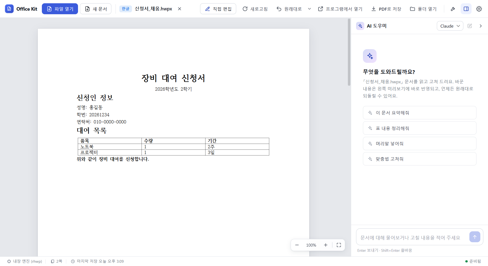
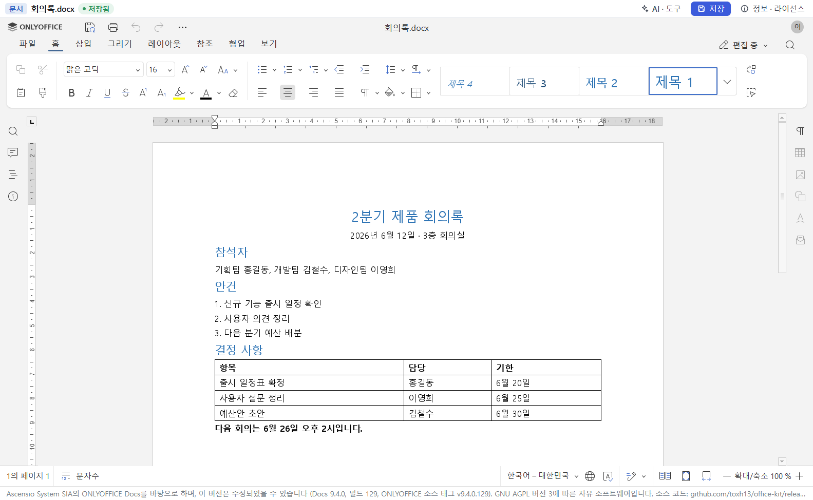
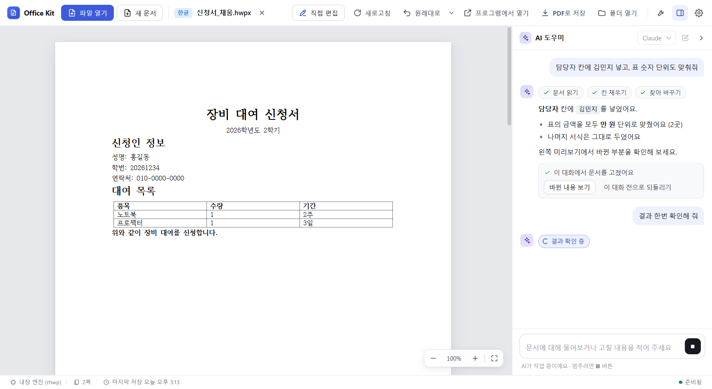
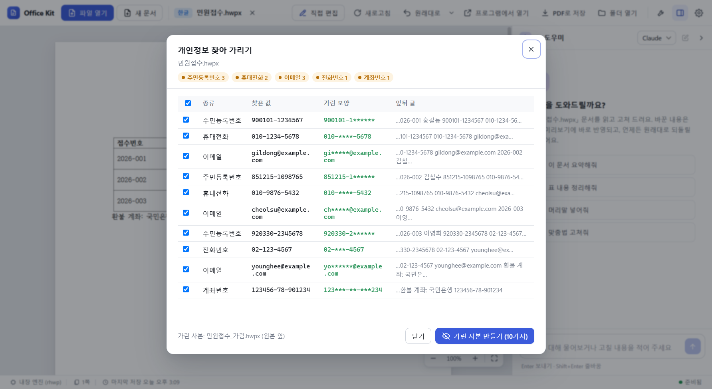

Hangul and Word files, one window
A free Windows app to open, edit and ask AI about documents.

Edit without Hancom Office or Microsoft Office
- Built-in editors for HWP, HWPX, DOCX, XLSX and PPTX work offline.
- If Hancom Office or Microsoft Office is installed, Office Kit uses it for exact output.
- Every change keeps a version you can restore.

Ask in plain words, with your own AI login
Office Kit runs the Claude Code or Codex you installed and signed in to. It never handles your credentials.

Mask personal data before you share
Finds Korean resident numbers, phone numbers, emails, card and account numbers, then writes a masked copy beside the original. Offline. Pattern based, so always check the copy.

Install
| Item | Details |
|---|---|
| Required | Windows 10 or 11, 64-bit |
| AI chat (optional) | Claude Code or Codex, installed and signed in by you |
| Exact output (optional) | Hancom Office, Word, Excel, PowerPoint |
The installer is not code-signed yet. If Windows shows “Windows protected your PC”, choose More info, then Run anyway.